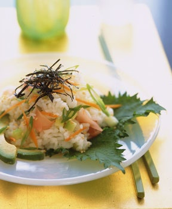

Sushi-Roll Rice Salad

A Plate of Sushi-Roll Rice Salad, with a side of Avocado, Sprinkled with Nori Strips.
This deconstructed sushi roll salad highlights Japanese-inspired textures and flavours. It offers a fresh perspective on the definition of salad. Great for lunches and or dinner, this all-in-one bowl is not only pleasing to the eye, but the stomach too.
Ingredients
- 1 1/2 cups short-grain sushi rice
- 1 3/4 cups plus 1 1/2 tablespoons water
- 1/4 cup seasoned rice vinegar
- 1 tablespoon sugar
- 1 teaspoon salt
- 1 medium carrot
- 1 1/4 teaspoons wasabi paste (Japanese horseradish paste)
- 1 1/2 tablespoons vegetable oil
- 1/2 large seedless cucumber (usually plastic-wrapped), peeled, halved lengthwise, cored, and chopped (1 cup)
- 3 scallions, thinly sliced diagonally
- 3 tablespoons drained sliced Japanese pickled ginger, coarsely chopped
- 1 tablespoonsesame seeds, toasted
- 1 firm-ripe California avocado
- 8 fresh shiso leaves (optional)
- 1 (6-inch) square toasted nori (dried laver), cut into very thin strips with scissors
Directions
- Rinse rice in several changes of cold water in a bowl until water is almost clear, then drain in a colander 30 minutes.
- Bring rice and 1 3/4 cups water to a boil in a 3- to 4-quart heavy saucepan, then simmer, covered, 2 minutes. Remove from heat and let rice stand, covered, 10 minutes (do not lift lid).
- While rice is standing, bring vinegar, sugar, and salt just to a boil in a very small saucepan, stirring constantly until sugar is dissolved, then cool 2 minutes.
- Spread rice in a large shallow baking pan, then sprinkle with vinegar mixture and toss with a wooden spoon.
- Shave thin lengthwise slices from carrot with a vegetable peeler, then cut slices diagonally into 1/4-inch-wide strips.
- Whisk together wasabi, remaining 1 1/2 tablespoons water, and oil in a bowl, then add rice, carrot, cucumber, scallions, pickled ginger, and sesame seeds and toss gently.
- Halve, pit, and peel avocado and cut crosswise into 1/4-inch-thick slices. Arrange 2 shiso leaves (if using) on each of 4 plates. Top with avocado and rice mixture and sprinkle with nori strips.